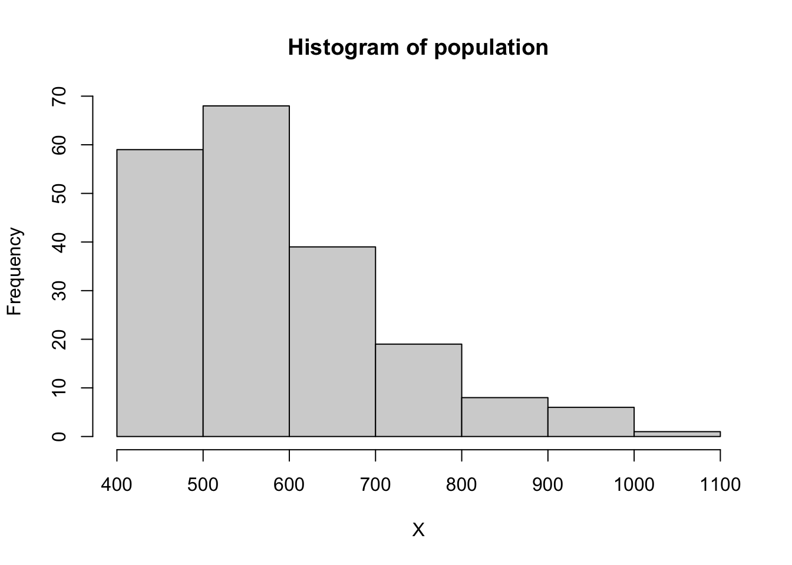
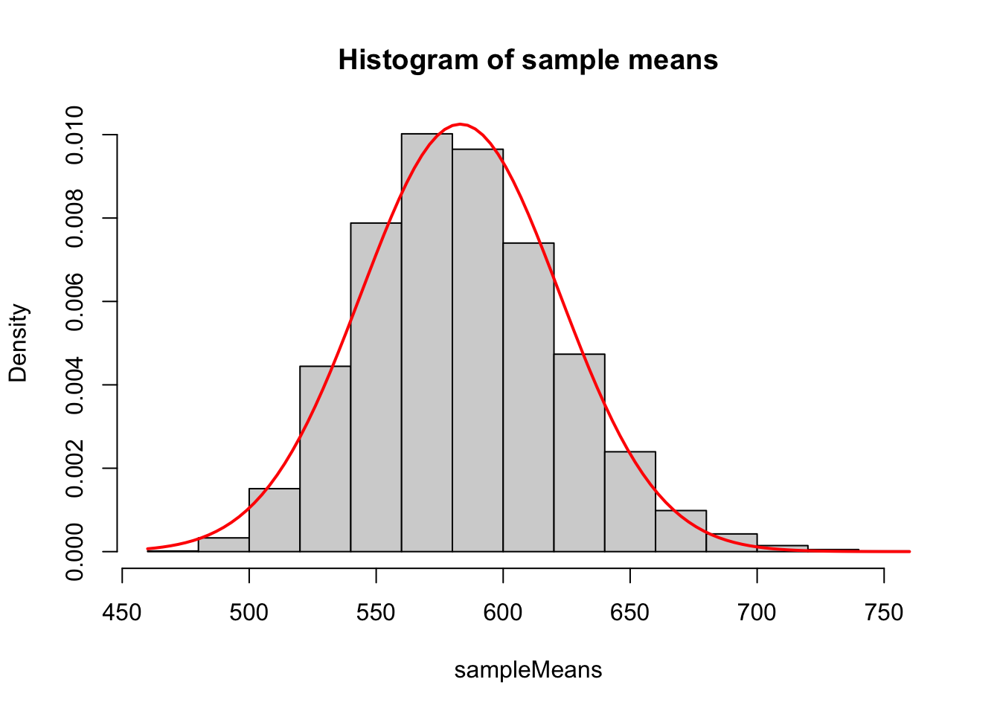

x [1] 431.1 512.7 483.0 534.6 580.7 603.1 626.9 611.8 528.9 672.8In the previous chapter, we saw that the sample mean is an unbiased estimator of the population mean (likewise for proportions). But we would always expect the sample mean to differ from the population mean. This raises two issues:
we need to be able to report how large the estimation error (the difference between the sample mean and the population mean) could be;
if the estimation error is potentially too large, the sample survey won’t be very useful; we need to plan the survey to avoid this.
We address both these issues using confidence intervals:
we report a confidence interval (typically a 95% confidence interval) as well as the point estimate from the sample mean (or sample proportion), to indicate a range of plausible values; how far the population mean could be from the sample mean;
we consider the relationship between the sample size and the width of the interval; we choose the sample size to ensure the width is acceptably small.
Confidence intervals for \(\overline{X}\) are usually based on the assumption that under SRS \[\overline{x} \sim N(\overline{X},(1-f)S^2/n)\] approximately. Using this approximation, we then have \[\frac{\overline{x}-\overline{X}}{\sqrt{(1-f)S^2/n}}\sim N(0,1). \tag{10.1}\] The population variance \(S^2\) will be unknown, so we estimate it with the sample variance \(s^2\). An approximate 95% confidence interval for \(\overline{X}\) can then be reported as \[ \bar{x}\pm t_{n; 0.025}\sqrt{(1-f)s^2/n}, \], where \(t_{n; 0.025}\) is the 97.5th percentile of the \(t\) distribution with \(n\) degrees of freedom.
More simply, we may calculate the intervals as \[ \bar{x}\pm 1.96\sqrt{s^2/n}, \tag{10.2}\] where
we have ignored the finite population correction. We may have to if the total population size \(N\) is unknown; we would need to assume \(n/N\) is small;
we have assumed \(n\) is large enough such that there is little difference between the \(t\)-distribution with \(n\) degrees of freedom and the standard normal distribution.
Now we have formula for the confidence interval, we can (almost!) use it to propose a sample size. We use the simpler form for the confidence interval Equation 10.2.
The user has to specify the desired maximum width for a confidence interval for \(\overline{X}\), given a desired level of confidence (typically 95%). Using Equation 10.2 for a 95% interval, the width \(w\) will be \[ w:=2\times 1.96 \sqrt{s^2/n}. \] If the user specifies the requirement that \(w\) is below some desired value, then we could solve for \(n\)…except that we don’t know the value of \(s^2\)! Two options are
if we have some other data that we think is related, or perhaps data from a pilot study, use that to estimate \(s^2\);
choose a value for \(s^2\) based on our own judgement of what is plausible for the population standard deviation \(S\): estimate what we think \(S\) is, and then replace \(s^2\) by the square of our estimate of \(S\).
To estimate the population standard deviation \(S\), note that for a normal distribution, we’d expect 95% of the population to be covered by an interval of width approximately \(4S\). So we could estimate \(S\) by thinking of what sort of range of values would cover most of the population, then dividing the the width of this range by 4.
We proceed as in Section 10.2, substituting \(p\) for \(\bar{x}\) and \(P\) for \(\bar{X}\). We suppose
\[p \sim N(P,(1-f)S^2/n)\] approximately. Using this approximation, we then have \[\frac{p-P}{\sqrt{(1-f)S^2/n}}\sim N(0,1).\] As before, we replace \(S^2\) by the sample variance \[ s^2 = \frac{n}{n-1}p(1-p), \] and report a 95% confidence interval \[ p\pm 1.96\sqrt{(1-f)\frac{p(1-p)}{n-1}}, \] One small detail: even though we have estimated a population variance \(S^2\) by a sample variance \(s^2\), we don’t make the switch from the normal distribution to the \(t\)-distribution. This is because, as commented earlier, in this case the population variance \(S^2\) is determined by the value of \(P\): it’s not a separate quantity that we can estimate independently.
We use the same approach as in Section 10.3, with one difference. The user again needs to specify the desired maximum width for a confidence interval for \(P\). For a 95% interval, ignoring the finite population correct, this width is \[ w:=2\times 1.96 \sqrt{\frac{p(1-p)}{n-1}} \] Again, the width depends on something unknown (\(p\)), but the maximum width occurs when \(p(1-p)\) is maximised, and because \(p\in[0,1]\), this is maximised at 0.25 when \(p=0.5\). Hence to determine the minimum \(m\), the user specifies the maximum desired width \(w_{max}\), and then we solve for
\[ 2\times 1.96 \sqrt{\frac{1}{4(n-1)}}\le w_{max}. \]
Suppose for each member of the population, the characteristic of interest is polychotomous (more than two possibilities), rather than binary. For example, in a UK election poll, there are more than two possible parties to vote for.
The previous methods can be used for point estimation: we can estimate, for example, the proportion of Labour voters by redefining the population characteristic simply as “Labour voter” or “not Labour voter”. However, the analysis is a little more complex if we want to quantify uncertainty about which proportion is largest, as the proportions are not independent, and one proportion does not determine the others.
Suppose the interest is in who is likely to win out of Conservative and Labour. One way to analyse this is as follows. For member \(i\) of the population, define \[\begin{align} X_i &= 1 \mbox{ if Conservative voter, and 0 otherwise},\\ Y_i &= 1 \mbox{ if Labour voter, and 0 otherwise},\\ Z_i &= X_i - Y_i, \end{align}\] so the population proportions of Conservative and Labour voters are \(\overline{X}\) and \(\overline{Y}\) respectively, with \(\overline{Z}\) the difference between these two proportions. Define the corresponding sample equivalents \(x_i, y_i\) and \(z_i\). By SRS results for the sample mean, we have \(\bar{z}\) an unbiased estimator of \(\overline{Z}\), with sample variance given by \[var(\bar{z})=(1-f)\frac{S^2_Z}{n}.\] As usual, we estimate the population variance \(S^2_Z\) by the sample variance \(s^2_Z\), and report a 95% confidence interval as \[\overline{z}\pm 1.96\sqrt{\left(1-\frac{n}{N}\right)\frac{s_Z^2}{n}},\] or \[\overline{z}\pm 1.96\sqrt{\frac{s_Z^2}{n}},\] if we assume \(n/N\) is small enough to ignore the finite population correction.
Note that \[\begin{align} (n-1)s^2_Z &= \sum_{i=1}^n(z_i-\overline{z})^2\\ &= n(\overline{x} + \overline{y} - (\overline{x} - \overline{y})^2). \end{align}\] as \(z_i^2 = x_i + y_i\).
A SRS of size 1000 was taken from the UK population and body weight (kg) was recorded. \(x_1, x_2, \ldots x_{1000}\) are the 1000 sample weights which had a mean of 78.2 kg. Further calculation gave \(\sum_{i=1}^{1000}x_i^2=6,241,154\) kg\(^2\). Find a 95% CI for \(\overline X\), ignoring the finite population correction.
Another SRS of size \(n\) is to be taken from the current UK population. Body weight (kg) will again be recorded. A 95% CI for the population mean body weight will be formed. What is the smallest sample size (\(n\)) that would give a 95% CI with a width of less than 1 kg?
A residential area has 5000 private houses. We wish to estimate the proportions of houses with:
more than three people living in them,
more than one car owned by the occupants of the house.
The estimators are required to have standard errors not exceeding 0.02 and 0.01 respectively. From other surveys it is thought that the proportions in (a) and (b) lie in the ranges \((0.35,0.55)\) and \((0.10,0.20)\) respectively. The two proportions are to be estimated from a single SRS. How large a sample is needed?
Confidence intervals for population means are derived from the approximation \[ \bar{x}\sim N(\bar{X},(1-f)S^2/n). \] Here we investigate this with a simulation study, expanding on the example in Example 10.1.
We first make up a population of size 200, where the population distribution is clearly non-normal:
set.seed(123)
X <- 400+round(rgamma(200, shape = 2, scale = 100), 1)
hist(X, main = "Histogram of population")
We now generate 10,000 simple random samples of size 10. For each sample, we calculate the sample mean.
sampleMeans <- rep(0, 10000)
for(i in 1:10000){
# Use the sample() function to draw a SRS
# this randomly selects 10 members from the population (X),
# sampling without replacement
x <- sample(X, size = 10, replace = FALSE)
# Calculate the sample mean for the SRS
sampleMeans[i] <- mean(x)
}We now compare the distribution of the sample mean with the approximate normal distribution given above (shown as the red line). Note that, because we have generated the population, we can determine the population mean and variance \(\bar{X}\) and \(S^2\).
hist(sampleMeans, prob = TRUE, main = "Histogram of sample means")
curve(dnorm(x, mean = mean(X), sd = sqrt((1-10/200)*var(X)/10)),
add = TRUE,
col = "red",
lwd = 2)
We can see that the histogram lines up fairly well (if not perfectly) with the normal distribution, even though the sample size is small (10) and the population distribution is skewed.